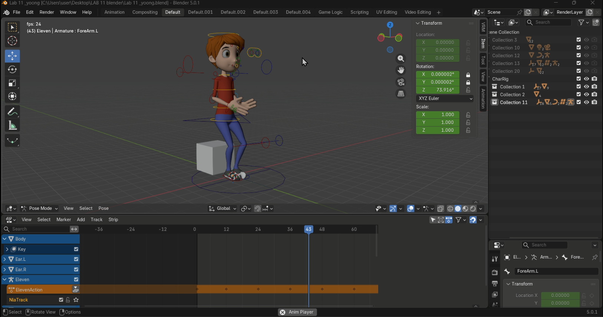

Currently a Year 2 Semester 2 student pursuing a BITM (Hons.) in Multimedia at UTeM. I bridge structural computer engineering logic with visual multimedia production.
My journey in technology started with computer hardware and systems architecture, which heavily sharpened my technical problem-solving logic. Over time, my passion shifted toward the creative application of technology—specifically how users interact with visuals, motion, and digital space. This drove me to specialize in 3D modeling pipelines, motion design, and user-interface optimization.

Cinematic sequences produced in Blender utilizing strategic keyframed light behavior and artistic camera tracking mechanisms. Emphasizes creative angle choreography and dynamic illumination paths to elevate visual storytelling pacing.
Video production portfolio showcasing fast-paced short-form social media edits. Using CapCut and Filmora for seamless transitions and motion pacing.
2024 - Present (Year 2 Sem 2)
Bachelor of Information Technology (Hons.) in Multimedia (BITM)
Previous Institutional Degree
Diploma in Electronic Engineering (Computer)
Freelance Development
Designed custom 3D animated logo intros and promotional assets for creators. Managed client revision pipelines from raw layout concept blocks to finalized high-fidelity animation renders.
Creative Projects
Compiled comprehensive travel logs and digital visual scrapbooks capturing regional exploration, focusing on clean image curation and sequence storytelling layouts.
Team Review Sessions
Actively engaged in technical troubleshooting sessions with peers, collaborating to solve asset posing restrictions, UV optimization barriers, and layout rendering bottlenecks inside Blender.
Academic Research Group
Researched interaction designs and structural capabilities of advanced social robotics frameworks (such as Ameca, Zenbo, and 1X NEO) to evaluate human-robot visual communication standards.
Whether you are looking for a multimedia intern, a video editor, or a 3D asset modeler, feel free to drop a message.
liyangyoong@gmail.com